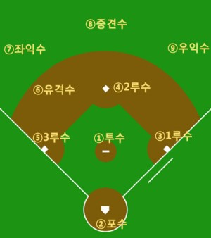

그동안 야구에 대해 관심은 있었지만 룰을 몰랐는가?
아니면 야구는 좋아하지만 룰이 어려웠던 적이 있는가?
이 페이지에서는 그런 분들을 위해 야구의 기본적인 룰들을 간단하게 설명해 줄 것이다.
야구에서는 공을 던지는 선수를 투수, 치는 선수를 타자라고 한다.
야구는 먼저 공격하는 팀(초 공격)과 나중에 공격하는 팀(말 공격)을 나누어서 경기를 진행하게 되는데, 홈 구장을 쓰는 쪽이 나중에 공격하게 된다.
초 공격팀과 말 공격팀이 한 번씩 공격을 하면 한 이닝(회)가 지났다고 하고, 정규이닝은 9회까지이다.
국내 리그에서는 9이닝이 지날 때까지 무승부이면 연장전에 돌입하게 되고, 연장전은 12회까지, 여기서도 결판이 안나면 무승부가 되게 된다.
각 팀은 9명의 선발 타자와 1명의 선발 투수로 경기를 시작하게 되고, 중간중간 후보 선수들과 교체를 하면서 경기를 진행할 수 있다.
각 팀당 3개의 아웃이 잡히기 전까지 공격을 실시할 수 있는데, 수비팀에서 아웃을 잡아내는 다양한 방법들은 아래에서 설명할 것이다.
[수비수들의 포지션]

- 위 사진은 수비 팀에서 수비수들의 위치와 그에 대응하는 번호를 보여주는 사진이다.
- 포수 앞에 위치한 흰색 오각형 모양을 홈플레이트,
1루수/2루수/3루수 쪽에 위치한 다이아몬드 흰색 모양을 베이스라고 한다.
- 번호 1~6번까지의 수비수가 위치한 곳을 내야/내야에 위치한 수비수를 내야수라고 하며,
7~9번까지의 수비수가 위치한 곳을 외야/외야에 위치한 수비수를 외야수라고 한다.
- 타자가 아웃되지 않고 베이스에 나가게 되는 것을 '출루한다' 라고 표현하고,
1루/2루/3루 베이스를 다 돌고 홈으로 들어오게 되면 공격 팀에서 1점을 얻게 된다.
- 1루수와 3루수 옆으로 지나가는 흰색 긴 선을 파울라인이라고 한다.
타자가 친 공이 이 안으로 들어가면 플레이를 계속 하고, 밖으로 나가면 파울이라고 하고 스트라이크 1개가 올라가며 투수가 다시 공을 던지게 된다.
- 투수가 포수에게 던진 공은 심판의 판정에 따라 스트라이크와 볼로 나뉘게 된다.
- 스트라이크는 좌우로는 포수 앞의 위치한 하얀색 오각형 모양인 홈플레이트,
상하로는 타자의 무릎 아랫부분과 어깨 윗부분/바지 벨트선의 중간선 사이의 공간에 들어오는 공을 말한다.
- 볼은 스트라이크존에서 벗어난 공을 말하게 된다.
- 타자는 3개의 스트라이크가 들어오면 아웃을 당하게 되는데 이를 삼진아웃이라고 하며
아웃카운트 1개가 올라가고, 볼 4개가 들어오면 볼넷이라고 하고 1루로 나가게 된다.
- 아웃의 종류
- 삼진아웃: 스트라이크 3개가 들어오게 되면 삼진아웃이라고 한다.
만약 2스트라이크 이후에 파울이 나오게 되면 삼진아웃이 되지 않고 계속 2스트라이크를 유지하게 된다.
- 땅볼아웃: 타자가 친 공이 내야에 땅볼로 가서 1루수에게 던져서 1루수가 베이스를
공을 친 타자보다 먼저 밟게 되면 땅볼아웃이라고 한다.
- 플라이아웃: 타자가 친 공이 떠서 수비수에게 잡히면 플라이아웃이라고 한다.
- 태그아웃: 수비수가 공 또는 공이 든 글러브로 주자의 신체에 접촉해서 아웃시키는 것이다.
주자 뒤쪽 베이스에 사람이 다 있는 경우에는 그 다음 베이스에서 태그 할 필요없이 베이스만 밟으면 되지만 그렇지 않을 경우 태그를 해야 아웃이 된다.
예를 들면 주자가 1, 2루에 위치하면 수비수는 3루에서 태그를 하지않고 베이스만 밟아도 아웃이 성립되지만, 2루에만 있는 경우 태그를 해야 아웃이 성립된다.
- 라인드라이브 아웃: 타자가 친 공이 높이 뜨지않고 일직선으로 빠르게 날아가는 것을 라인드라이브라고 한다.
라인드라이브 공이 잡히면 라인드라이브 아웃이라고 한다.
- 병살와 삼중살: 타자의 타격 후 수비수가 그 타구를 잡아 공격측 선수 2명을 아웃시키는 것을 병살이라고 한다.
삼중살은 3명의 공격측 선수를 한번에 아웃시킬 경우를 말한다
- 타자가 수비수가 처리할 수 없는 타구를 치고 안전하게 베이스에 살아나간 것은 안타라고 한다.
수비수가 처리할 수 있었는데 실책이 나와서 살아나간 것은 안타가 아닌 실책으로 나갔다고 한다.
- 주자가 나가있을 때 타자가 안타를 치지 않아도 다음 베이스로 간 것을 도루라고 한다. 1, 2루에서 동시에 2, 3루로 도루할 경우 이를 더블스틸이라고 한다.
- 타자가 안타로 2루까지 나가면 2루타, 3루까지 가면 3루타라고 한다. 만약 외야수 뒤편에 있는 펜스를 넘어가면 홈런이라고 하고,
주자가 1명 나가있었으면 2점, 2명 있었으면 3점, 3명 있었으면 만루홈런으로 4점이 인정된다.
만일 펜스를 넘지 않은 타구를 수비측 선수들이 처리하는 동안 타자가 홈까지 들어와서 득점하는 경우를 그라운드 홈런이라고 한다.